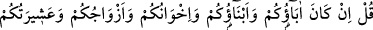
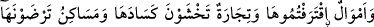
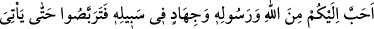
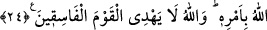

tercih ederek onları sırdaş ve dost edinmemelidirler. Allah Teâlâ’nın: “Sizden kim
onları dost edinirse işte zâlimler onlardır” sözü bu mânâya delalet eder.
Haddâdî: “Böyle kimseler kâfirleri dost tuttukları için “zâlimler” sayılmışlardır.
Çünkü küfre rıza gösteren kâfir olur.” demiştir.
Kâşifî der ki: “Bu âyet nâzil olunca, hicrete karşı olanlar şöyle dediler: Biz şimdi
kabile ve aşiretlerimizin arasındayız ve alış veriş ve ticaret edip vaktimizi geçiriyoruz.
Hicret ettiğimiz zaman zorunlu olarak babamız ve çocuklarımızdan kopmamız
gerekecek, ticaret bitecek, biz kazançsız ve malsız kalacağız. Bunun üzerine sonraki âyet
nâzil oldu.”
24. De ki: “Eğer babalarınız, oğullarınız, kardeşleriniz, eşleriniz, hısım
akrabanız, kazandığınız mallar, kesada uğramasından korktuğunuz ticaret,
hoşlandığınız meskenler size Allah’tan, Rasûlü’nden ve O’nun yolunda cihâd
etmekten daha sevgili ise artık Allah emrini getirinceye kadar bekleyin. Allah,
fâsıklar topluluğunu hidâyete erdirmez.”
Ey Muhammed! Hicreti terk eden kimselere “de ki: “Eğer babalarınız, oğullarınız,
kardeşleriniz, eşleriniz, hısım akrabanız,” Mekke’de “kazandığınız” ve elde ettiğiniz
“mallar…” -Malların kazanıldığının belirtilmesi, sıkıntı ve zorluk çekilerek elde
edildiğinden onların yanında çok değerli olması sebebiyledir.- hac mevsiminde Mekke-i
Mükerreme’de bulunmamanız sebebiyle revaç vakti geçerek “kesada uğramasından
korktuğunuz ticaret” yani ticâret yapmak ve kâr etmek için satın aldığınız metalar,
“hoşlandığınız meskenler” yâni son derece nezih oldukları için içlerinde ikamet
etmekten memnun kaldığınız evler ve bahçeler, “size Allah’tan, Rasûlü’nden” yani
Medine’ye hicret etmek suretiyle Allah’a ve Rasûlüne itaattten “ve O’nun yolunda”
Allah’a itâat olarak “cihâd etmekten daha sevgili ise…”
Buradaki ‘sevgi’den maksad, ihtiyari (iradeye bağlı) sevgidir. Yani, Allah ve
Rasûlünün emirlerini devamlı olarak yerine getirme, onları hiç terk etmeme sonucunu
doğuran bir sevgidir. Yoksa insanda mutlaka bulunan fıtrî sevgi değildir. Çünkü fıtrî
sevgi, insanın tercihine bağlı olmadığından yükümlü tutulduğu bir sevgi değildir.
“artık Allah emrini” yani dünya veya ahirette vereceği cezayı başınıza “getirinceye
kadar bekleyin.” Bu ifâde, nefsinin hazlarını dinin emirlerine tercih eden kimse için
tehdit ifade etmektedir.